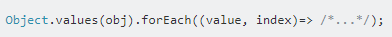
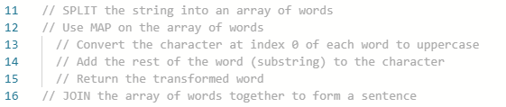
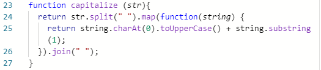

In this problem, I had a gradebook containing a list of four students, eg. the first student in the list is named Thomas. There was a separate list of four sets of test scores, eg. the first set of scores was [80, 70, 70, 100]. I had to add each score set to a student respective of the list ordering, eg. since Thomas is the first student in the list, his set of scores is the first set, [80, 70, 70, 100].
I already had the logic in my head to solve the problem. I had to go through each student in the gradebook, get the number (ie. the index) indicating the student's position in the gradebook, retrieve the set of scores at the position indicated by the index, and add it to the student.
I had issues with this because the gradebook was defined as a JavaScript object. I did not know how to get the index of a value in an object.
I used Google to find the answer. I felt a little frustrated here as I could not find an answer quickly. It wasn't until I clearly defined my problem, based on the logical solution I was trying to implement (going through a set of values and getting each value's index) and the particular problem I was having (getting an index from a value in a JavaScript object) that I was finally able to find an answer. So, I searched something like "javascript object iterate index". After looking through a few links, I found what I wanted, and it was something that I had never seen before, but I decided to try it out.
I incorporated this into my code and it ended up working, I successfully managed to get the index from each value in the gradebook. I learned that to solve a particular problem when coding, you have to know your issue. And when getting help, you should be able to explain what you are trying to do and the particular concept you are having an issue with when trying to do that particular thing.
I was working on a piece of code where I had to capitalise the first letter of every word in a sentence. I could have used some very basic coding techniques to solve it, but it would have looked horrendous, horribly long, and have had a great potential for error.
To solve the problem elegantly, I wanted to use things called functions. which would each change a particular detail of the sentence, and use a different function step by step to transform the code. I was suggested to use the functions split, and join, all of which I were not familiar with, along with map and toUpperCase, which I was already familiar with. After researching online, I figured out how to use these functions and how to capitalise the first letter of all words, and solved the problem.
First, I wrote some pseudocode of the solution. Pseudocode is not actual code, but it is best described as, if code was transformed into simple, plain English. It is structured like code, but the actual text are just sentences describing exactly what is happening. In the pseudocode below, I described what the functions were doing as well as other actions.
I then started writing the code one by one, by converting each line of pseudocode into actual code. To ensure each line of the code was working as expected, I used console.log , which prints to the coding program whatever you want. For example, to make sure that the split function was correctly splitting a sentence eg. "hello hello", I used console.log on the result of the splitting to ensure I was seeing the desired result, eg. console.log"hello","hello"
Following the method, I managed to get the code working. But the code was longer than necessary because every action was written independent from the other. To simplify the code, I used chaining so that each function was joined to each other, so the code could happen on just one line.
Here, I learned that problem solving for complex problems is done best in a step by step manner, which slows the pace to make it easy to understand what's going on. And then only shorten the solution once you have actually got the solution working. It might be overwhelming to write something like the piece of code above in just one quick go.
Here I am describing how confident I am with the following methods of problem solving.
Pseudocode: I know how to write fairly good pseudocode, but I do not use it that often. I think it would be useful to write it more often to perfect it, especially when I solve more complex problems in the future.
Trying something: As demonstrated above, trying something definitely helps in cases that cannot be solved through the knowledge you already have. I was not confident about this method before using it like I just did, but I feel more confident about it now.
Rubber ducky: I have yet to try this but I can see how it works. I feel fairly confident that it would work.
Reading error messages: I am confident in reading some error messages, such as unit test messages and errors indicating which line something went wrong on. I am a little less confident about more ambiguous error messages such as range errors or reference errors, but with practice I am sure I will be fine.
Console.logging: I use this method all the time so I am 100% confident with it.
Googling: As shown above, finding the answer on Google takes a bit more work than you think. You need to clearly define your problem and intention before knowing what kind of answer you want. I used to just Google whatever came to my head, but now that I've done it in a cohesive manner I feel more confident.
Asking peers for help: I am not the best at describing my problems cohesively, so I'm not too confident about asking for help. I only feel relatively confident when I've tried practically everything I can think of and can think of no better way.
Asking coaches for help: I have not really tried this at all or had it come to my mind so don't really feel confident nor unconfident about it.
Improving my process with reflection: Having done a lot of reflecting throughout these past few weeks, I think it has improved my memory with things. I have yet to master it completely, but am feeling slightly more confident with it than I was previously.